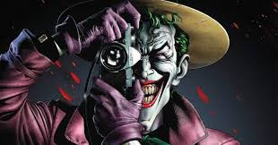

Não é surpresa que o Batman é considerado um dos maiores super-heróis de todos os tempos: Seu elenco de adversários reúne alguns dos mais emblemáticos nomes de todo o gênero, reunindo uma vasta galeria, com os criminosos mais insanos e perigosos do mundo das histórias em quadrinhos. Confira a seguir um pequeno perfil de alguns destes experts da malvadeza.
É um dos mais mortais inimigos do Cavaleiro das Trevas! O Coringa estreou em Batman #1, em abril de 1940, e em sua estreia, foi apresentado como um misterioso e macabro palhaço, que cometia crimes e matava com um gás do riso, o qual paralisava os nervos do rosto e fazia a vítima morrer com os músculos da face contraídos em uma careta horripilante semelhante a um sorriso.
Na TV o Coringa foi interpretado por Cesar Romero de 1966 a 1968 e, no cinema, por Jack Nicholson em 1989, Heath Ledger em 2008 e Joaquin Phoenix em 2019. Houve também um curta-metragem de 2003, no qual foi vivido, de forma impressionante, pelo ator Andrew Koenig.
Apareceu pela primeira vez na Detective Comics #58, em 1941,e é até hoje um dos vilões mais inteligentes que o Batman já enfrentou. O Pinguim é excelente em planejar os seus crimes e um ótimo líder, características que lhe concederam contatos por todo o mundo criminoso de Gotham. Mas a sua inteligência não é a única arma que possui.
Apesar da sua aparência, ele é um excelente lutador de judô e boxe. Contudo as suas características atléticas são alteradas de HQ em HQ, dependendo do autor da trama. Sua arma preferida é sempre o seu guarda-chuva.
O Charada apareceu pela primeira vez na edição #140 de Detective Comics. Seu nome original é Edward Nashton, nasceu em uma família complicada, onde sua mãe era muito ausente e seu pai cometia diversos abusos contra ele.
Um dia, ainda criança, quis tanto ganhar um concurso de charadas e adivinhas na escola, que praticou várias vezes até conseguir solucioná-las com rapidez e facilidade. Sua habilidade o levou a uma obsessão por charadas e adivinhas para o restante de sua vida, mas os abusos que sofreu nas mãos do pai o fizeram ficar louco e se voltar para o mundo do crime.
Foram vários os atores que interpretaram o papel do Charada ao longo do tempo. Frank Gorshin foi o primeiro, na série dos anos 60, onde Adam West fazia papel principal. Jim Carey representou o personagem em 1995, no filme Batman Eternamente, e Cory Michael Smith em 2014, na série Gotham que conta a história de origem de alguns dos vilões do Cavaleiro das Trevas.
Criada por Robert Kanigher, sua primeira aparição foi em Batman #181 em junho de 1966. É uma das inimigas mais duradouras do Batman e pertence ao grupo de adversários que compõem sua galeria de vilões.
O álter ego da Dra. Pamela Lillian Isley é descrita como uma das mais notórias eco terroristas do mundo, ela é obcecada por plantas, botânica, ecologia e ambientalismo. Imune a qualquer tipo de toxina, consegue criar plantas em lugares sem sol e infértil.
A personagem foi interpretada na série Gotham pela atriz Clare Foley nas duas primeiras temporadas, e depois foi substituída pela atriz Maggie Geha. No cinema, Uma Thurman deu a vida a Hera Venenosa no filme Batman & Robin de 1997.

Duas-Caras apareceu pela primeira vez em Detective Comics #66, em agosto de 1942.
Inspirado por um anúncio do filme de Spencer Tracy, O Médico e o Monstro, Bob Kane concebeu a ideia de um vilão com dupla personalidade.
A identidade verdadeira de Duas-Caras é Harvey Dent, promotor público de Gotham City e aliado próximo de Batman, que entrou para a vilania depois de ter seu lado esquerdo do rosto desfigurando – existem 2 versões para o fato: uma que foi em um julgamento pelo chefe da máfia Sal Maroni, e outra que foi numa emboscada arquitetada pelo Coringa – mas o fato é que Harvey se tornou um psicopata que decide o destino dos seus reféns pela sorte entre vida e morte, com sua moeda deformada como ele.
O personagem foi interpretado por Billy Dee Williams no filme Batman, de 1989, por Tommy Lee Jones , em Batman Forever, de 1995, e por , Aaron Eckhart em The Dark Knigtht de 2008.
Sua primeira aparição foi em 1941, como Jonathan Crane, professor de psicologia, que se volta para o crime depois que ele é demitido. A única coisa revelada sobre sua infância é que, como uma criança, ele gostava de assustar as aves, dai o apelido de espantalho.
A especialização de Crane é a natureza do medo e, consequentemente, o Espantalho se utiliza de técnicas, armas e equipamentos especiais para aterrorizar seus oponentes. Sua marca registrada é o gás do medo, que usa em suas vítimas. Além de ser um dos inimigos mais icônicos de Gotham, também é um dos perigosos do Batman, pois tem a capacidade de mexer diretamente com os traumas mais profundos do herói.
Jonathan Crane é o único vilão a aparecer em todos os filmes, ora como procurador, ora como espantalho. Já foi interpretado por vários atores, mas o mais lembrado, é Cilian Murphy, da trilogia The Dark Knight .